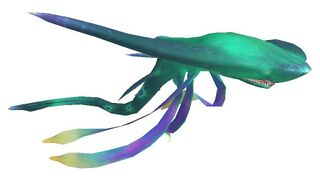
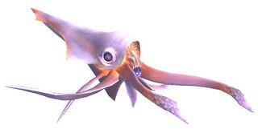
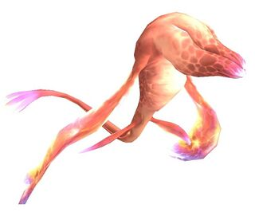
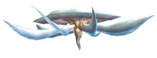
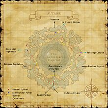

Description
Al'Taieu is an outdoor area in Lumoria.
Map

Involved in Quests / Missions
| Quest / Mission | Type | Starter | Location |
|---|---|---|---|
| In the Name of Science | General | Yurim | Tavnazian Safehold (J-8) |
NPCs
| Name | Location | Type |
|---|---|---|
| Quasilumin | — | — |
| Goblin Footprint | H-12 | Repeating Cutscenes |
Notorious Monsters
| Name | Level | Drops | Steal | Family | Spawns | Notes |
|---|---|---|---|---|---|---|
| Absolute Virtue | 84 | Sin of Indignation Sin of Insolence Sin of Indulgence Sin of Infatuation Sin of Indolence Sin of Invidiousness Sin of Intemperance | — |  AernImage source AernImage source | — | A, L, T(S) |
| Jailer of Hope | 85 | Hope Staff Hope Torque Fifth Virtue | — |  PhuaboImage source | — | A, T(H) |
| Jailer of Justice | 85 | Justice Sword Justice Torque Fourth Virtue | — |  XzomitImage source | — | A, T(S) |
| Jailer of Prudence | 85 | Sixth Virtue Prudence Rod Prudence Torque | — |  HpemdeImage source | — | A, L, T(H) |
| Jailer of Love | 83 | Aura of Adulation Aura of Voracity Love Halberd Love Torque | — |  YovraImage source | — | A, T(H) |
| Om'yovra | 85 | Yovra Organ Luminian Tissue Crystal Clusters | — | YovraImage source | 13 | Respawn:30 minutes; A, T(H) |
| Ul'yovra | 82 | Yovra Organ Luminian Tissue Crystal Clusters | — | YovraImage source | 2 | Respawn:60 minutes; A, T(H) |


Regular Monsters
Event Monsters
| Name | Level | Drops | Steal | Family | Spawns | Notes |
|---|---|---|---|---|---|---|
| Aw'euvhi | — | Black Card Red Card White Card | — |  EuvhiImage source EuvhiImage source | 9 | Killed for Limbus access; T(H) |
| Ru'aern | — | — | — | AernImage source | 9 | Spawned Mission: Garden of Antiquity; A, L, T(S) |
Story walkthroughs in this area
| Story | Mission / quest |
|---|---|
| CoP 7-5 | The Warrior's Path |
| CoP 8-1 | Garden of Antiquity |
| CoP 8-3 | When Angels Fall |
| CoP 8-4 | Dawn |
References
External references describe their own server or retail rules. Documented Zenith changes take precedence.
Map credits: Map 1 — HorizonXI Wiki. Original game maps © SQUARE ENIX; redrawn maps retain the credited authorship and license.

Additional level-75 reference


This area is part of the Celestial Capital of Al'Taieu; what remains of the Zilart capital city of Al'Taieu which was destroyed by the wyrmking Bahamut.
This area is only accessible if the Chains of Promathia expansion is installed and Promathia Mission 7-5:The Warrior's Path is completed.
Connecting Areas
- Sealion's Den via Auroral Updraft at (H-14)
- Grand Palace of Hu'Xzoi at (H-11)
- Konschtat Highlands via Dimensional Portal at (D-7)
- La Theine Plateau via Dimensional Portal at (H-5)
- Tahrongi Canyon via Dimensional Portal at (L-8)
- Temenos at (H-4)
- Apollyon via Swirling Vortex at (D-6) and (K-6)
Notes
Access is gained by completing Chains of Promathia Mission 7-5. Scattered around Al'Taieu are six red columns of light called Auroral Updrafts. The one near the entrance to Grand Palace of Hu'Xzoi transports you to Sealion's Den; the others transport you to the first one. Dimensional Portals at the crags of Dem, Holla and Mea connect to the ones in northern Al'Taieu. There are Auroral Updrafts near each of them.
Involved in Quests/Missions
|
Quest |
Type |
Starter |
Location |
| In the Name of Science | General | Yurim | Tavnazian Safehold (J-8) |
| Mission | Country | Starter | Location |
| Promathia Mission 8-1:The Garden of Antiquity | Promathia | --- | --- |
| Promathia Mission 8-4:Dawn | Promathia | --- | --- |
NPCs Found Here
|
Repeating CutscenesYou can repeat cutscenes at the Goblin Footprint in H-12, just to the east of the ramp up to the Grand Palace of Hu'Xzoi.
|
Notorious Monsters Found Here
| Name | Level | Drops | Steal | Family | Spawns | Notes |
|---|---|---|---|---|---|---|
| Absolute Virtue
|
Aern | 1 | ||||
| Aw'euvhi
|
Euvhi | 9 | ||||
| Jailer of Hope
|
Phuabo | 1 | ||||
| Jailer of Justice
|
Xzomit | |||||
| Jailer of Prudence
|
Hpemde | 2 | ||||
| Jailer of Love
|
Yovra | 1 | ||||
| Om'yovra
|
Unknown | Yovra | ||||
| Ru'aern
|
Unknown | Aern | ||||
| Ul'yovra
|
82 | Yovra |
|
HP = Detects Low HP; M = Detects Magic; Sc = Follows by Scent; T(S) = True-sight; T(H) = True-hearing JA = Detects job abilities; WS = Detects weaponskills; Z(D) = Asleep in Daytime; Z(N) = Asleep at Nighttime |
Mobs Found Here
| Name | Level | Drops | Steal | Family | Spawns | Notes |
|---|---|---|---|---|---|---|
| Aern's Elemental
|
Unknown | Elementals | ||||
| Aern's Wynav
|
Unknown | Wyverns | ||||
| Aern's Xzomit
|
Unknown | Xzomit | ||||
| Om'aern
|
75 - 78 | Aern | ||||
| Om'hpemde
|
73 - 77 | Hpemde | ||||
| Om'phuabo
|
79 - 81 | Phuabo | ||||
| Om'xzomit
|
76 | Xzomit | ||||
| Ul'aern
|
70 - 73 | Aern | ||||
| Ul'hpemde
|
68 - 72 | Hpemde | ||||
| Ul'phuabo
|
75 - 76 | Phuabo | A | |||
| Ul'xzomit
|
68 - 71 | Xzomit |
|
HP = Detects Low HP; M = Detects Magic; Sc = Follows by Scent; T(S) = True-sight; T(H) = True-hearing JA = Detects job abilities; WS = Detects weaponskills; Z(D) = Asleep in Daytime; Z(N) = Asleep at Nighttime |
Adapted from Eden Wiki: Al'Taieu · Contributors and history · CC BY-SA 4.0. Revision 45729. Layout, links and optional background text adapted for Zenith.